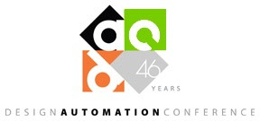

July 27 2009
1st International Workshop on Bio-Design Automation
About IWBDA
The First International Workshop on Bio-Design Automation (IWBDA) will bring together researchers from the synthetic biology and design automation communities. The broad focus will be on concepts, methodologies and software tools for the automated synthesis of novel biological functions. A specific focus will be on the application of computational expertise from electronic circuit design to these areas.
Still in its early stages, the field of synthetic biology has been driven by experimental expertise; much of its success has been attributable to the skill of the researchers in specific domains of biology. There has been a concerted effort to assemble repositories of standardized components. However, creating and integrating synthetic components remains an ad hoc process. The field has now reached a stage where it calls for computer-aided design tools. The electronic design automation (EDA) community has unique expertise to contribute to this endeavor. This workshop offers a forum for cross-disciplinary discussion, with the aim of seeding collaboration between the research communities.
Topics of interest include:
- Design methodologies for synthetic biology.
- Standardization of biological components.
- Automated assembly techniques.
- Computer-aided modeling and abstraction techniques.
- Engineering methods inspired by biology.
Venue
The workshop will be held in the Moscone Center, in downtown San Fransisco on July 27, 2009, co-located with the Design Automation Conference. DAC is the premier conference in the field of electronic design automation with over 10,000 attendees.

Agenda
- Keynote Address (Room 124)
- 8:00am - 8:15am Opening Remarks, Douglas Densmore, Marc Riedel, and Soha Hassoun.
- 8:15am - 9:00am Keynote Address, Mind The Gaps! (let's make biology easy to engineer), Drew Endy.
- Session 1 - Models and Algorithms (Room 124)
- 9:00am - 9:25am Synthesizing Sequential Register-Based Computation with Biochemistry, Adam Shea, Brian Fett, Marc Riedel, and Keshab Parhi.
- 9:25am - 9:50am DOMINANT-EDGE PATHWAY: A Weighted Graph Algorithm for Identifying Dominant Metabolic Pathways, Ehsan Ullah, Kyongbum Lee, and Soha Hassoun.
- 9:50am - 10:05am Simplified Biochemical Models using Factor Graphs, Chris Winstead and Chris Myers.
- 10:05am - 10:30am Computer-Aided Synthetic Biology: How Multiscale Models can Rationalize the Design of Synthetic Gene Networks, Vassilis Sotiropoulos, Jonathan Tomshine, Katherine Volzing, Poonam Srivastava, and Yiannis Kaznessis.
- Session 2: Experimental Biology (Room 124)
- 10:50am - 11:05am Automated Design of Synthetic Ribosome Binding Sites to Control Protein Production, Howard Salis, Ethan Mirsky, and Christopher Voigt.
- 11:05am - 11:30am Programmed Control of Cellular Function: An in-cell Disease Prevention Device, Sangram Bagh, Mahuya Mandal, and David McMillen.
- Morning Poster Session (Rm 125)
- 11:30am - Noon
- Poster 1: "An Adaptive Data Structure for Biological System Design," Douglas Densmore, Bing Xia, Josh Kittleson, Timothy Ham, and J. Christopher Anderson.
- Poster 2: "Applying Circuit Topological Analysis Techniques to Networks in Systems Biology," Sherief Reda.
- Poster 3: "A Rigorous Approach to the Design of Oligonucleotides for PCR-based Gene Synthesis," P.J. Steiner.
- Poster 4: "Bridging Synthetic Biology Models and Experiments using PoBoL," Michal Galdzicki, Deepak Chandran, Herbert Sauro, Daniel Cook, and John Gennari.
- Poster 5: "Contamination Aware Droplet Routing for Digital Microfluidic Biochips," Tsung-Wei Huang and Tsung-Yi Ho.
- Poster 6: "Designing Single-Duplex DNA Nanostructures by Abstraction," Shogo Hamada and Satoshi Murata.
- Poster 7: "From Electronic to Biological Design Automation: Building the Bridge," Giuseppe Nicosia.
- 11:30am - Noon
- Lunch (Rm 125)
- Noon - 1:30pm
- Keynote Address (Room 124)
- 1:30pm - 2:15pm Keynote Address, Ron Weiss.
- Session 3 - Tools and Parts (Room 124)
- 2:15pm - 2:30pm Design Tools for Synthetic Virology, Dimitris Papamichail and Steven Skiena.
- 2:30pm - 2:45pm A Framework for Modeling Modular DNA Parts: Towards the Predictable Design of Synthetic Systems, Ty Thomson.
- 2:45pm - 3:00pm Synthetic Biology: A New Application Area for Design Automation Research, Chris Myers, Nathan Barker, Kevin Jones, Hiroyuki Kuwahara, Curtis Madsen, Nam-Phuong Nguyen, and Chris Winstead.
- 3:00pm - 3:15pm GenoCAD, Matthew William Lux, Yizhi Cai, and Jean Peccoud.
- 3:15pm - 3:40pm Bridging Synthetic Biology Design and Experiments using PoBoL, Deepak Chandran, Michal Galdzicki, and Alec Nielsen.
- Session 4 - Languages and Standardization (Room 124)
- 3:50pm - 4:15pm Towards a High-Level Programming Language for Standardizing and Automating Biology Protocols, Vaishnavi Ananthanarayanan and William Thies.
- 4:15pm - 4:30pm BioBrick Open Language: A Keystone for Efficient Development and Communication of Standard Biological Parts, Cesar Rodriguez, Douglas Densmore, and Drew Endy.
- Afternoon Poster Session (Rm 125)
- 4:30pm - 5:00pm
- Poster 8: "Genetic Edge Detection," Jeff Tabor.
- Poster 9: "JBEI Registry: Towards a Distributed Web of Registries," Timothy Ham, Zinovii Dmytriv, Paul Adams, and Jay Keasling.
- Poster 10: "Overcoming Abstraction Barriers in Synthetic Biology Systems," Austin Che.
- Poster 11: "PoBoL in the Lab: Structured Organization of Biological Samples for Laboratory Management and Automation," Alec Nielsen, Deepak Chandran, Michal Galdzicki, Sean Sleight, Herbert Sauro, Daniel Cook, and John Gennari.
- Poster 12: "TinkerCell: a CAD application for Synthetic Biology," Deepak Chandran, Frank Bergmann, and Herbert M. Sauro.
- Poster 13: "Toward Automatic Design of DNA Logic Gates and Devices," Ibuki Kawamata, Fumiaki Tanaka, and Masami Hagiya.
- Poster 14: "A Framework for Modeling Modular DNA Parts: Towards the Predictable Design of Synthetic Systems," Ty Thomson.
- Poster 15: "Workflow Design for Synthetic Biology Using Clotho and Kepler," Douglas Densmore, Thien Nguyen, and J. Christopher Anderson.
- 4:30pm - 5:00pm
- Panel Session (Moderator: Douglas Densmore, Rm 124)
- 5:00pm 5:50pm: "Biology and EDA – what do we need?"
- Panelists:
- Lou Scheffer, Janelia Farms HHMI and Cadence Design Systems
- Kevin Clancy, Invitrogen
- Claes Gustafsson, DNA 2.0
- Ron Weiss, MIT
Program
The program is posted here in pdf and text.

Proceedings
Workshop Proceedings (Program, Abstracts, Participant List).Registration
The registration fee for the workshop is $195. To register:
- Go to the DAC website: www.dac.com/46th/reg.html.
- Hit the "Register Online" button.
- Fill out the personal information page and the attendee survey.
- Select what you are registering for: one the right hand side, you have a number of options; if you select "Workshops" you can select IWBDA.
For those planning on attending DAC, there is a discount on the full conference registration fee if you register for IWBDA.
Badge pick-up at DAC: All workshop attendees can pick up their badge at the Advance Registration desk located in the North Lobby. Please proceed to the Speaker Desk. All organizers, presenters and attendees must have a badge to attend the workshops. All badges will have a specific code that indicates they are registered for the Bio Design workshop.
Logistics
Internet access: Wireless internet access is available only in the foyers and lobbies of the convention center. There is no internet access in the meeting rooms.
Talk guidelines: We-will supply a projector, laser pointer, computer and a wired lavaliere microphone. There will also be a podium microphone. Each speaker should bring their talk on a USB stick to Douglas Densmore before their session (by 7:50am for morning talks and by 1:20pm for afternoon talks). The talks should be in Microsoft Powerpoint. Talks scheduled as 25 minutes should be 20 minutes in length with 5 minutes for Q&A and speaker transitions. Talks scheduled as 15 minutes should be 12 minutes in length with 3 minutes for Q\&A and speaker transitions. Due to the tight time constraints, we'll adhere to this schedule rigorously.
Poster guidelines: Poster boards and thumbtacks will be provided. Each poster should be 30 inches tall and 40 wide.
Organizing Committee
- General Chair - Douglas Densmore (UC Berkeley)
- Technical Program Chair - Marc Riedel (University of Minnesota)
- Soha Hassoun (Tufts University)
- Ion Mandoiu (University of Connecticut)
- J. Christopher Anderson, UC Berkeley
- Adam Arkin, UC Berkeley
- Kevin Clancy, Invitrogen
- Douglas Densmore, UC Berkeley
- Drew Endy, Stanford University
- Soha Hassoun, Tufts University
- Alfonso Jaramillo, Ecole Polytechnique
- Eric Klavins, University of Washington
- Yannis Kaznessis, University of Minnesota
- Ion Mandoiu, University of Connecticut
- Costas Maranas, Penn State University
- Chris Myers, University of Utah
- Marc Riedel, University of Minnesota
- Herbert Sauro, University of Washington
- Christopher Voigt, UCSF
- Ron Weiss, MIT
- Erik Winfree, Caltech
- Chris Winstead, Utah State University
Executive Committee
Program Committee
Surveys
We ask that all the workshop participants take a few minutes to complete the following surveys:
Mailing List
To add yourself to the IWBDA mailing list, please send an email to listserv@lists.umn.edu with a blank subject line, consisting of a single line of text: SUBSCRIBE IWBDA-list Joe Nobody (where Joe Nobody is your name).
This is a moderated list: only postings approved by the owners will be distributed. Only material directly related to IWBDA will be sent.
Sponsors
The workshop is supported in part by The Synthetic Biology Engineering Research Center, by DNA 2.0, and by Invitrogen.